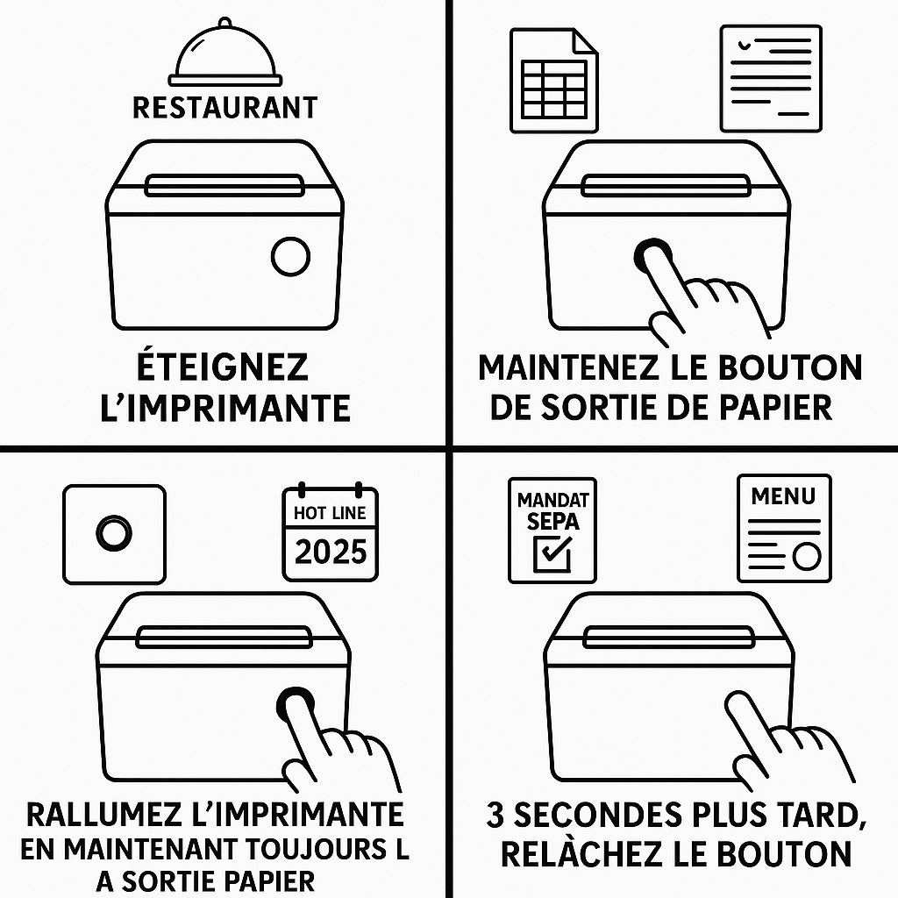

🧾 Dépannage – Imprimantes Ticket
L’imprimante ne fonctionne plus
- Vérifiez que le papier est bien chargé (face thermique vers le haut).
- Redémarrez l’imprimante avec le bouton d’alimentation.
- Débranchez le cable RJ45 à l'arrière de l’imprimante ainsi que l'autre coté (prise murale ou switch) et rebranchez les deux côtés.
- Débranchez puis rebranchez l'alimentation du switch (boitier rectangulaire sur lequel est branché tout les cables reseau des caisses et imprimantes).
- Eteignez l'imprimante, une fois éteinte maintenez le bouton de sortie de papier, tout en restant appuyé, rallumez l'imprimante et 3 secondes plus tard relâchez le bouton du papier.
